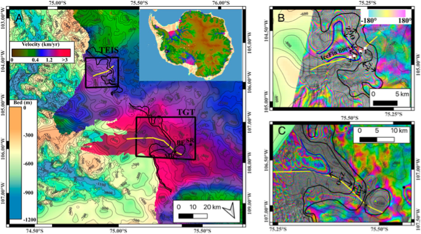
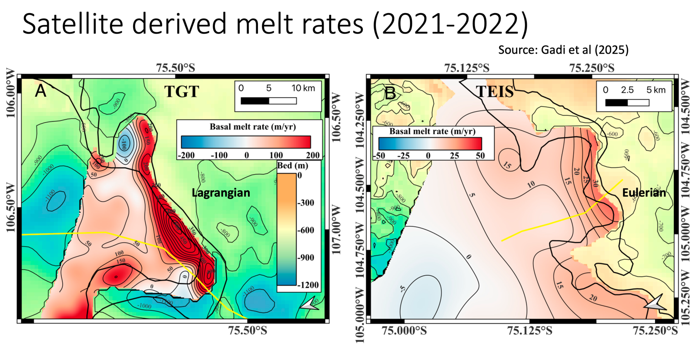
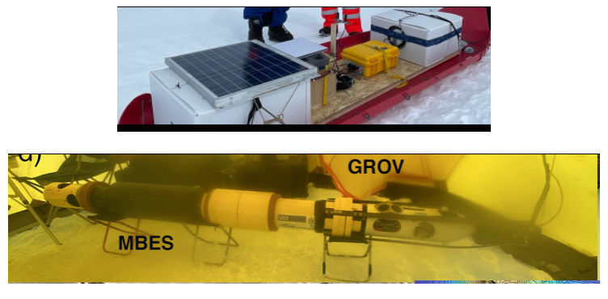
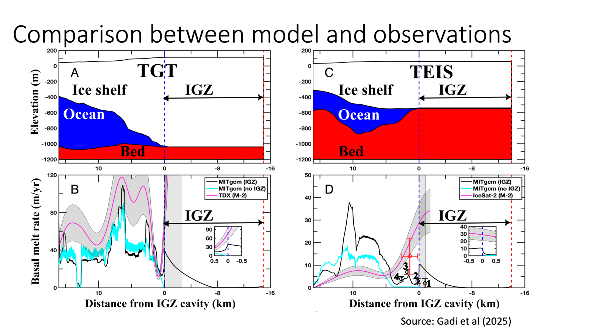

Constraining ice-shelf basal melting across observational scales
Combining satellite remote sensing, autonomous phase-sensitive radar, underwater observations, and numerical ocean models to investigate grounding-zone melt processes.
1. Mapping grounding-zone geometry at Thwaites Glacier
The Thwaites Glacier grounding region contains two distinct branches, the Thwaites Glacier Tongue (TGT) and the Thwaites Eastern Ice Shelf (TEIS). Satellite interferometry can constrain the spatial extent of tidally migrating grounding lines and the ice grounding zone (IGZ) and ocean grounding zone (OGZ). These observations provide the geometric framework for interpreting ice–ocean exchange.

2. Satellite-derived basal melt rates
Repeat surface-elevation and ice-velocity observations, including TanDEM-X and ICESat-2 ATL14/ATL15 products, can be used within an ice-column mass-conservation framework to infer basal melt rates. The calculation accounts for changes in ice thickness, ice-flux divergence, and surface mass balance, with the latter independently estimated using the Regional Atmospheric Climate Model (RACMO). Appropriate assumptions and corrections are needed to translate surface-elevation change into thickness change.
For the IGZ estimates presented in Gadi et al. (2025), the reported uncertainty is approximately ±28–30%. Satellite estimates provide spatially extensive melt-rate patterns, including areas where direct field measurements are unavailable.

3. Direct observations: ApRES and underwater vehicles
Autonomous phase-sensitive radio-echo sounding (ApRES) repeatedly measures the positions of internal radar reflectors and the ice base. Over month-to-year intervals, changes in reflector range can be used to estimate vertical strain and separate ice deformation from basal melting, subject to assumptions about ice motion and reflector tracking.
Autonomous or remotely operated underwater vehicles provide complementary ocean and geometry measurements. At Petermann Glacier, the GROV platform was used to investigate the sub-ice-shelf environment. Underwater mapping can constrain ice-base and seabed morphology, while suitable instruments can measure temperature, salinity, and ocean velocity. These measurements inform the oceanic heat and salt budgets and, with a three-equation ice–ocean boundary-layer parameterization and appropriate exchange coefficients, can be used to estimate basal melting.

4. Testing ocean models against observations
The final step brings these constraints together. Satellite interferometry defines the grounding-zone extent, remote sensing provides spatial melt-rate estimates, ApRES offers local time-resolved estimates of basal melting, and underwater measurements constrain cavity geometry and ocean properties. Ocean models then provide a dynamical framework for testing whether the observed melt distributions can be explained by seawater intrusion, boundary-layer exchange, and circulation beneath the ice shelf.
The Thwaites comparison below illustrates how model predictions with and without an IGZ can be evaluated against satellite-derived melt rates and other observational constraints. Agreement or disagreement can help identify which physical processes and geometric features require improved representation.

Related research
Gadi et al. (2025), Proceedings of the National Academy of Sciences. Read paper ↗